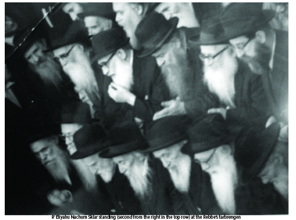

A Loyal and Devoted Chassid
Shortly before Yud Shvat 5710, the Rebbe asked the Chassid, R’ Eliyahu Nachum Sklar for notes of a maamer said by the Rebbe Rayatz in 5683. A few days later, the maamer was published with the famous opening words of “Basi L’Gani.” * A glimpse into the life of a Chassid to mark his passing on 17 Teves 5750.
 R’ Eliyahu Nachum Sklar a”h was born in 5663/1903 in Zhlobin and learned in Yeshivas Tomchei T’mimim in Lubavitch, then in Szedrin, Kremenchug, Rostov, Poltava, Nevel, and Charkov. Then he emigrated to Eretz Yisroel and learned in Yeshivas Toras Emes in Yerushalayim. He was known as a maskil in Chassidus.Emigrating to Eretz Yisroel was not common in those days and the Rebbe Rayatz gave his approval conditionally in a letter that he wrote in 5686/1926: Every talmid Tamim knows that his path in life is to take action to arouse hearts to Torah, avoda, and t’filla. A double and threefold arousal in thought, speech and action. 1) By keeping himself involved in learning, this will affect his surroundings. 2) Public speaking – each one needs to find a place, a moshava, a town, even a small place and devote himself to making it a place of Torah; inspiring the fathers to found a school or yeshiva, inspiring the people to establish times for learning Torah, and also learning with the public a chapter of Mishnayos, a daf Gemara, Agada, Midrash, and where suited even an inyan in Chassidus. 3) In action: to correspond with the friends that you learned with, or in general, with talmidei ha’T’mimim. And to speak to one another in order to do all they were taught when they were talmidim. These are the conditions with which I permitted you to go to Eretz Yisroel in order to accomplish something good and there is no good except for Torah.
R’ Eliyahu Nachum Sklar a”h was born in 5663/1903 in Zhlobin and learned in Yeshivas Tomchei T’mimim in Lubavitch, then in Szedrin, Kremenchug, Rostov, Poltava, Nevel, and Charkov. Then he emigrated to Eretz Yisroel and learned in Yeshivas Toras Emes in Yerushalayim. He was known as a maskil in Chassidus.Emigrating to Eretz Yisroel was not common in those days and the Rebbe Rayatz gave his approval conditionally in a letter that he wrote in 5686/1926: Every talmid Tamim knows that his path in life is to take action to arouse hearts to Torah, avoda, and t’filla. A double and threefold arousal in thought, speech and action. 1) By keeping himself involved in learning, this will affect his surroundings. 2) Public speaking – each one needs to find a place, a moshava, a town, even a small place and devote himself to making it a place of Torah; inspiring the fathers to found a school or yeshiva, inspiring the people to establish times for learning Torah, and also learning with the public a chapter of Mishnayos, a daf Gemara, Agada, Midrash, and where suited even an inyan in Chassidus. 3) In action: to correspond with the friends that you learned with, or in general, with talmidei ha’T’mimim. And to speak to one another in order to do all they were taught when they were talmidim. These are the conditions with which I permitted you to go to Eretz Yisroel in order to accomplish something good and there is no good except for Torah.
Despite the geographic distance, R’ Eliyahu Nachum’s heart was with his fellow T’mimim in Russia and he wrote to them often. He wanted to know the fate of the yeshivos that had gone underground in those years, and of course, he wanted to know how the Rebbe was. After the arrest and release in 1927, R’ Eliyahu Nachum could not hide his concern for the yeshiva. R’ Saadia Liberow who responded to his letter chastised him, “Your concern about the students of the Mosad and your thoughts about it are from the ‘left side,’ sadness … the Mosad is, praise G-d, being run in every place in the best possible fashion.”
The dozens of letters he received from his friends behind the Iron Curtain were kept in his archives. They are an invaluable source that shed light on that terrible time, especially the years of 5687 and 5688.
WORRIED FAMILY IN THE UNITED STATES
After marrying in Eretz Yisroel, he wanted to move to the United States where his father, R’ Levi Yitzchok and his brother Meir lived. “Eliyahu Nachum Sklar and Chaim Dov Lieberman (the battim makers) … are in Yerushalayim and are dissatisfied. Chaim Dov wants to leave but can only go to London while Eliyahu Nachum wants to go to America.” This is what R’ Sholom Posner wrote to R’ Yisroel Jacobson in 5686.
A year later, R’ Eliyahu Nachum asked R’ Jacobson for help since the latter, as part of his job in preparing the groundwork to transfer Chabad headquarters to America, helped many T’mimim move to the United States.
Before he left, he was appointed the Rosh Yeshiva of Toras Emes – Tel Aviv, a branch of the Yerushalayim yeshiva, which opened on Rechov HaRav Kook 16. The yeshiva did not last long; it closed down about a year after it opened.
In the meantime, R’ Yisroel Jacobson asked R’ Sklar’s father and brother to bring him to America. In those days, in order to get a visa to the US, family members had to affirm that they would take financial responsibility for the individual. The early immigrants who arrived first looked for a job and only after they were set up and had saved money did they bring over the rest of their families. R’ Eliyahu Nachum’s family had not saved up enough yet and could not pay his expenses. They were afraid that being a talmid of Yeshivas Tomchei T’mimim who would not change with the times, he would not find a job and they would have to support him.
R’ Jacobson promised them that he would help R’ Sklar find work and during the Aseres Yemei T’shuva 5690, R’ Eliyahu Nachum came with his wife and daughter Yehudis to the US. Yom Kippur passed and the worried father went to R’ Yisroel’s home and asked him, “What about parnasa?”
On Chol HaMoed Sukkos the father came back, this time with his son. “Your promised!” he complained to R’ Yisroel. After Chol HaMoed, R’ Yisroel was able to find a position for R’ Eliyahu Nachum as a shochet where his uncle, R’ Yeshaya Jacobson, was the head shochet. R’ Eliyahu Nachum worked there for several years until the slaughterhouse closed.
CHABAD COMMUNITY ACTIVIST 
Even after his arrival in the US, R’ Eliyahu Nachum continued to show great concern about what was happening with the Rebbe Rayatz. Throughout the years he was in touch with the Rebbe’s secretary, R’ Yechezkel (Chatshe) Feigin, who sent him letters in which he updated him about the Rebbe’s welfare. The letters, suffused with hiskashrus and the love of Chassidim for the Rebbe, were full of chiddushei Torah and pilpulim in the teachings of Chassidus. In subsequent years, after the Rebbe’s son-in-law arrived in the US, R’ Eliyahu Nachum corresponded with him too in Torah and Chassidus. The Rebbe’s letters to him are printed in the Igros Kodesh.
R’ Sklar also fulfilled the three instructions regarding the avoda of a Tamim when he first came to the US. In thought, as mentioned, he was a maskil and knowledgeable in the teachings of Chassidus and also corresponded in chiddushei Torah. In speech, he gave a weekly shiur in Tanya in the Shomrei Emuna shul in Boro Park. In action, his communal work promoting the interests and causes of Chabad began taking on an official character.
In 1936, we already find a letter with his signature on it as the “temporary secretary” of the Boro Park branch of Aguch and as such, he invited the public to a Shabbos Mevarchim farbrengen in the home of R’ Eliyahu Simpson. At the farbrengen, “We will do as our Rebbe desires and say T’hillim and then learn Chassidus. We will farbreng in truth in the proper Chassidic manner as in Lubavitch.” The askanus relationship between the two Chassidim who lived in Boro Park did not end with that; a few years later, R’ Sklar was appointed secretary of the Vaad HaMaamad which was directed by R’ Simpson.
As soon as the Rebbe arrived, he reestablished the Igud HaKehillos Nusach HaAri and R’ Sklar was a member of the organization, which included nearly all the Chabad askanim in the US at that time.
In 5701, he was appointed as secretary of the Vaad L’Hafatzas Dach, whose goal was to organize shiurim in Chassidus and farbrengens along with disseminating maamarim and sichos said by the Rebbe.
When the writing of Moshiach’s Torah began, the Rebbe Rayatz wrote him on 6 Iyar 5702, inquiring about the skins needed for the parchment.
In 5703, with the passing of R’ Dovid Schifrin, a dynamic askan in Aguch and the first gabbai of Kollel Chabad in the US and Canada, the Rebbe Rayatz appointed R’ Sklar to replace him. In a letter, he announced this to the members of Kollel Chabad in Yerushalayim and wrote, “His hand is like my hand in all matters of the Kollel.”
On Simchas Torah 5704, the Rebbe said a fiery sicha in which he asked everyone to commit to working with mesirus nefesh to disseminate Torah.
Two weeks later, the Rebbe called a meeting of a few Chassidim, including R’ Sklar. The Rebbe said he called them together in order to bring to fruition what had been started on Simchas Torah and that the role of the people called to the meeting would be the education of girls. R’ Sklar was appointed to work with R’ Yisroel Jacobson in running the Beis Rivka schools that had been established at the time.
In 5705, R’ Sklar was among the Chassidim who committed themselves, as a gift to the Rebbe for 12 Tammuz, to print the first maamarim that the Rebbe said on this continent. The letter that the Chassidim wrote to that effect was printed at the beginning of the Seifer HaMaamarim 5700 that was published then.
Before Yud Shvat 5710, the Rebbe took a copy of the maamer “Va’yehi B’etzem HaYom HaZeh 5683” that R’ Sklar had. In the middle of this maamer begins the maamer “Basi L’Gani,” which the Rebbe Rayatz instructed be published in honor of Yud Shvat (in R’ Sklar’s copy the Rebbe marked from where to begin). His enormous Chassidic archive was helpful in other instances. For example, the Rebbe borrowed from him the sichos of the Rebbe Rashab, edited them, and printed them in Toras Sholom.
A few days after giving the maamer, R’ Sklar, who was a member of the chevra kadisha since its founding, had the merit to remove the bottom of the aron of the Rebbe Rayatz and lower it by rope into the fresh grave along with R’ Bentzion Skolik. At that moment, the Rebbe-to-be said out loud, “This is on condition that if we go to Eretz Yisroel, we will not go without you.”
The following year, R’ Sklar was one of the leading Chassidim who demanded that the Rebbe take over the nesius. On 8 Iyar, he was one of the Chassidim who went to the Rebbe to promise him that they would be utterly devoted to him.
The Rebbe said: What I am allowed and what I have, I will give. And that which I do not have and that which I am not allowed to give, I cannot and I do not want [to give]. The Chassidim asked the Rebbe to say Chassidus and the Rebbe said: That would be a change from before. He gave the same response when they asked him to at least review the Chassidus of the Rebbe Rayatz.
That same year, the relationship R’ Sklar had with the Rebbe was apparent. At the farbrengen at the end of Shavuos 5710, between the sichos, he began to sing and people in the crowd began shushing him, but he continued and in the end, they all sang and they could see the Rebbe singing too.
The night of Simchas Torah after hakafos which ended at two in the morning, R’ Sklar waited along with R’ Kramer near the Rebbe’s room and when the Rebbe returned from hakafos, they said l’chaim to him. After the Rebbe responded, many other Chassidim joined and the Rebbe said, “Why should I be a porush min ha’tzibbur (different than anyone else)?” and he asked for mashke and said with a smile that they shouldn’t tell the family members. He said l’chaim along with a short sicha.
Although R’ Sklar did not have an official shlichus, he was a shliach with all his heart and might. In Kovetz Lubavitch, we find a description of a meeting that took place in his house on Rosh Chodesh Kislev 5717 in which they discussed how to strengthen the Judaism of the customers at the kosher butcher. They decided they would try and speak to the customers about sending their children to Jewish schools and that they would give them brochures on Jewish topics. The delivery men would check to see if there was a mezuza on the door. R’ Sklar said he would produce a book in English that would clearly explain the laws of koshering chickens. He was chosen to be responsible to carry out the decisions and to report them to the Rebbe.
He was also active in Crown Heights. He was involved in running a gemach there for some years, together with R’ Shimon Goldman. The Rebbe called him forth to give him mashke for the annual dinner for the gemach that took place on Motzaei Shabbos, Parshas Mishpatim.
Sadly, R’ Eliyahu Nachum Sklar was killed in his late eighties in a car accident on 17 Teves 5750. The shul “Beis Eliyahu Nachum,” on the street where he lived, is named for him.
SECOND BAR MITZVA
At the farbrengen on Shabbos, Parshas Naso 5737, the Rebbe told children to say l’chaim. R’ Sklar, who was sitting behind the Rebbe, raised his cup in l’chaim to the Rebbe. The Rebbe asked him whether he too was not yet bar mitzva and added with a smile, “Some say that at age 83 you make a second bar mitzva and since you are over 70, you are also not yet bar mitzva.”
Rdinari. "A Loyal and Devoted Chassid." Beis Moshiach, no. 907 (December 17, 2013).